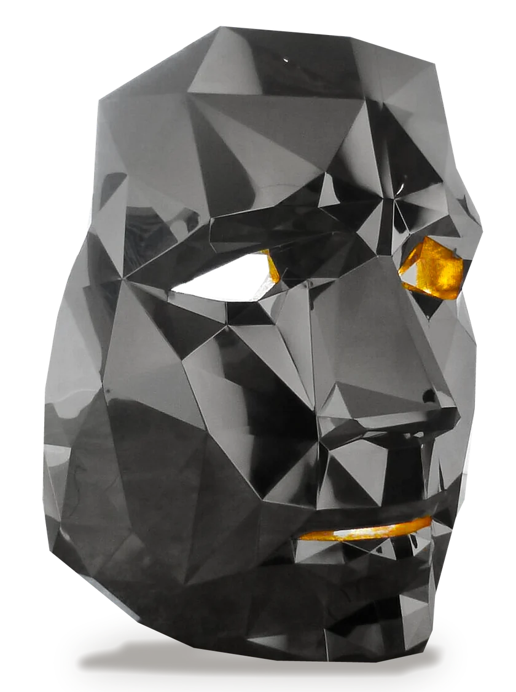
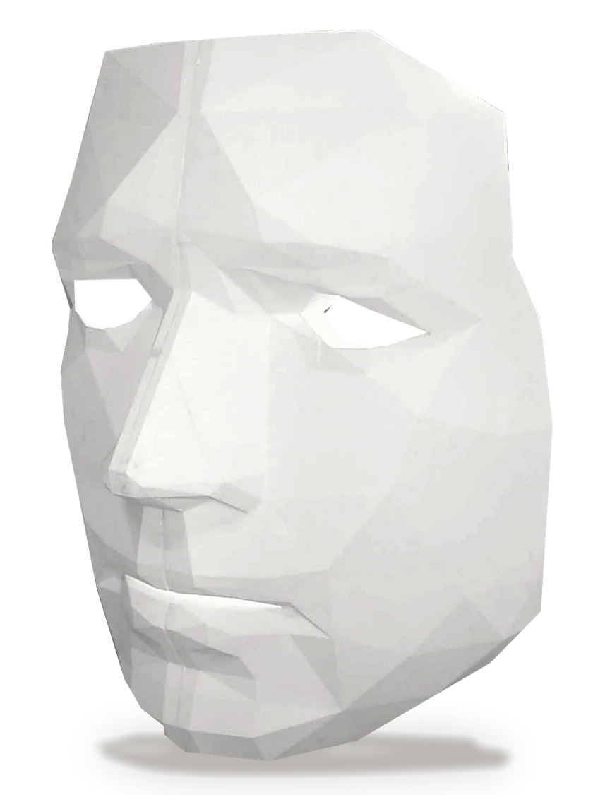
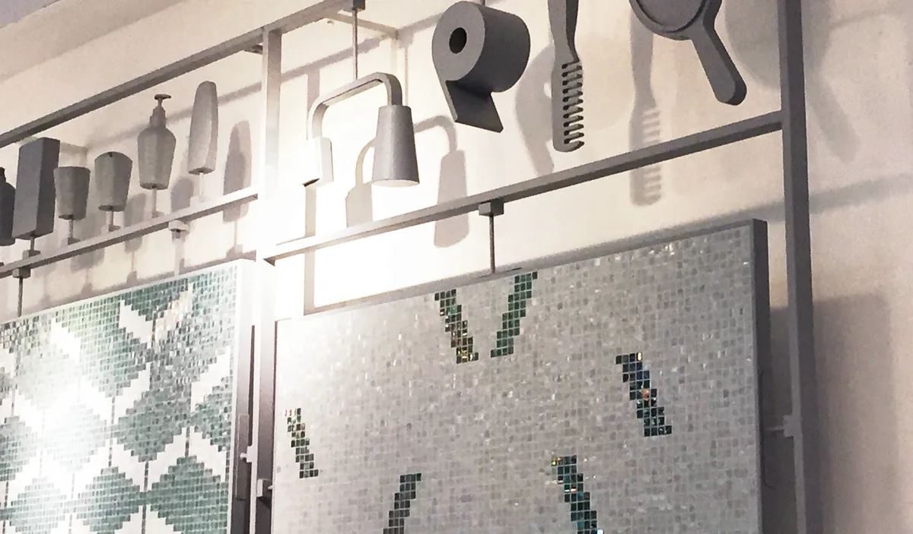
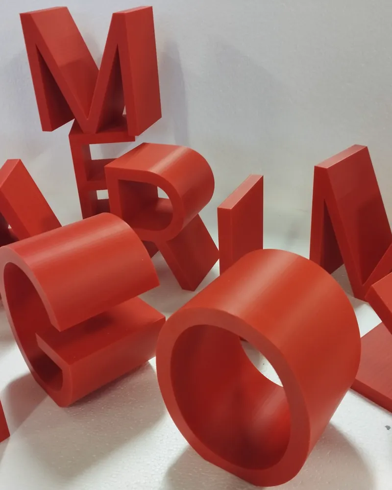
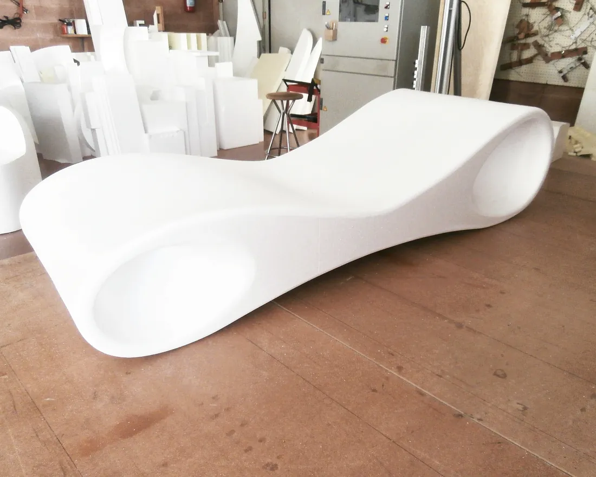
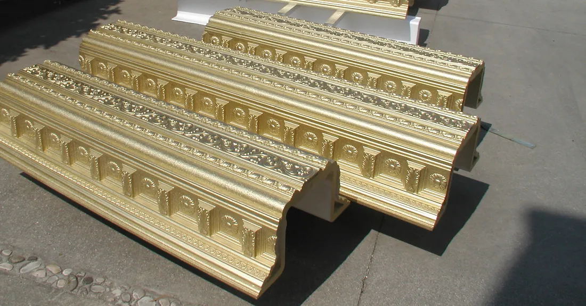
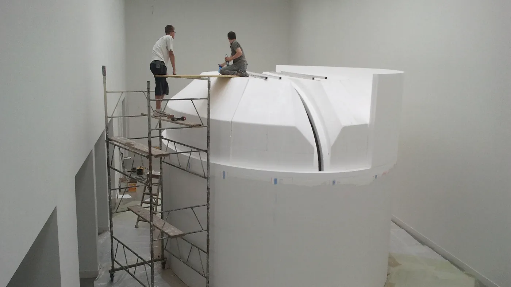
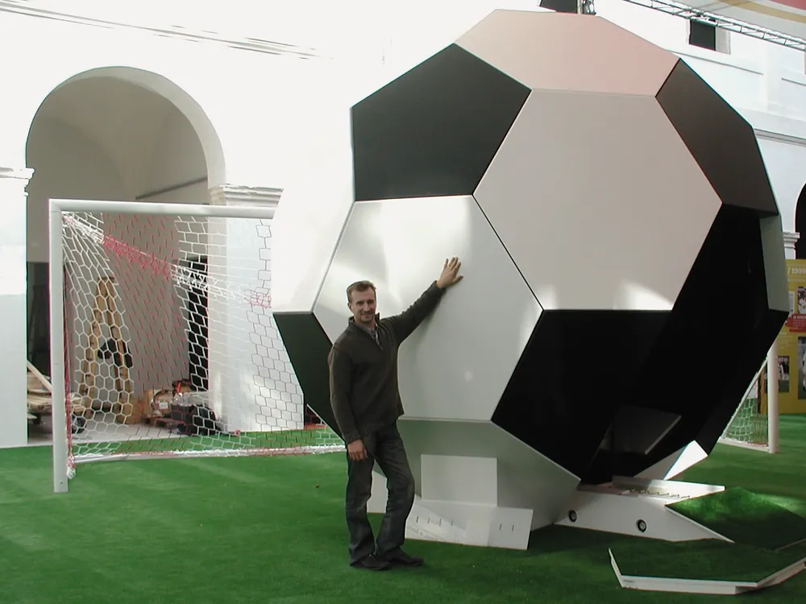

Polistirolo
scolpito e rifinito


Finito. La testa cromata, con occhi e bocca dorati.
Scenografie, vetrine e stand, decori per l'edilizia, prototipi e oggetti fuori scala. Tagliamo il polistirene espanso con macchine a controllo numerico e, dove serve, lo lavoriamo a mano. A Grisignano di Zocco dal 1986.
Finiture a prova di curiosi
Con gli opportuni trattamenti plastici il polistirolo diventa una superficie resistente agli urti, che si può toccare. E può sembrare marmo, metallo, oro, o prendere il colore di un marchio.

Scenografie, vetrine e stand
Per teatro, cinema, vetrine e fiere. Si monta e si smonta in fretta: adatto alle produzioni itineranti.

Loghi e lettere in volume
Marchi e scritte in tre dimensioni.

Prototipi e mockup
Il prototipo da vedere e tastare con mano prima della produzione, e il prodotto rifatto in grande per la fiera.

Edilizia e decori
Cornicioni, cornici, colonne e archi resinati. Casseforme per il getto del calcestruzzo.
E poi le torte finte monumentali per i pasticceri, e la stampa 3D in plastiche ecosostenibili, ABS e plastiche strutturali.

Dal file al pezzo finito
Partiamo dal progetto 3D del cliente; se manca, il solido virtuale lo elaboriamo noi. Le macchine a controllo numerico tagliano il blocco e, dove serve, si scolpisce a mano.
Un prodotto riproposto in dimensioni più grandi suscita la curiosità del passante
